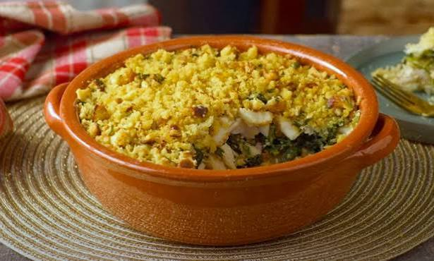

receita |
ingredientes |
procedimento |
| arroz de atum | arroz,atum,sal,água,azeite | ferver a água,temperar com sal e azeite, cozer o arroz durante 15min e misturar com atum |
| guacamole | abacate,tomate,cebola,lima,coentros | esmagar o abacate, picar a cebola, o tomate e os coentros,estremer a lima, misturar todos estes ingredientes numa taça e adicionar o sumo da lima |
| lasanha | massa de lasanha, carne picada,molho de tomate,molho bechamel,queijo ralado | cozinhar a carne picada com o molho de tomate, fazer camadas de massa carne e molho bechamel até preencher por completo o recipiente, adicionar queijo e cozinhar no forno |
| tomatada de ovos | tomate,ovos,cebola,oregãos, arroz | cortar os tomates e cozinhar em lume médio coma cebola, partir os ovos e deixar estrelar,servir em cima de arroz,colocar oregãos |
| alho francês à brás | batata palha,alho francês,ovos,cebola | fazer um refogado simples e adicionar o alho francês e a cebola, adicionar a batata palha, bater os ovos, adicionar e envolver |

ingredientes
Procedimento
Ás vezes é preciso um doce
ir para as sobremesas